Paul Town — Lv.4 recompose harness (Batch 1 real environment art) — 390 × 741. Grass/patches/path/fence/gate/hedge/clusters/river load from
./batch1/<filename>; missing files render as labelled dashed placeholders. Buildings, Paul, signs and locked landmarks are unchanged from the mockup.
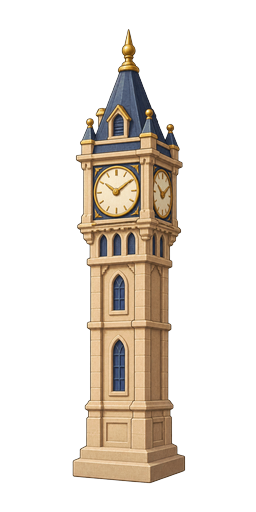
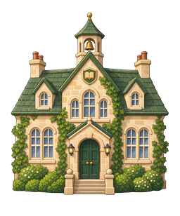
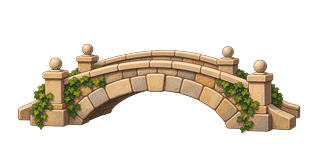
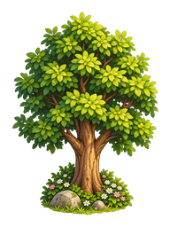
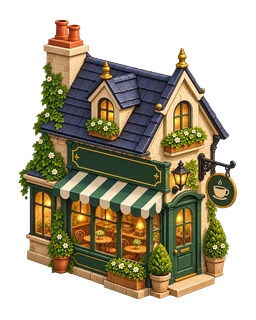
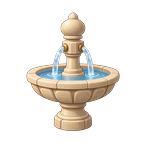
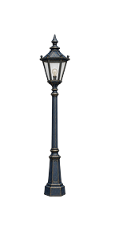
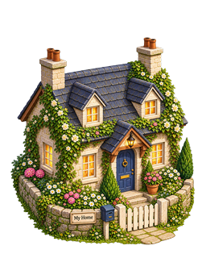
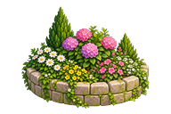
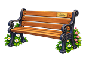
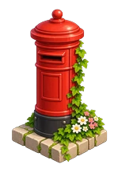
Welcome to Paul Town!